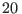
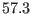
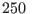
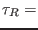

Next: Middelbank Up: Shelf sea scenarios Previous: Liverpool Bay Contents
These simulations are made for the location of station 271 Central Eastern Gotland Sea of the Baltic Sea at E and N with a water depth of about m. Initial conditions for temperature and salinity are derived from measurements. Meteorological forcing was available from the ERA15 reanalysis data set (http://wms.ecmwf.int/research/era/Era-15.html). For the penetration of solar radiation into the water column, fairly turbid water (Jerlov type IB) is assumed. Salinity concentrations are nudged to observations with a time scale of  2 days.
For the comparison of simulated temperature and salinity and observations we have used mainly data from the COMBINE program. All environmental monitoring within HELCOM and the Baltic marine environment is carried out under the COMBINE program. The COMBINE program runs under the umbrella of HELCOM. HELCOM is the governing body of the Convention on the Protection of the Marine Environment of the Baltic Sea Area - more usually known as the Helsinki Commission (www.helcom.fi). In a regular schedule data from stations in the Baltic Sea are collected. Parts of these data are maintained inter alia at the Baltic Sea Research Institute Warnemünde and can be used for scientific work.
Model results and observations are compared for the years 1994-1996.
For the discretisation, the water column has been
divided into 100 vertical layers, with a strong zooming towards the surface,
resulting in a mean near-surface resolution of less than 0.5 m.
The time step for these simulations is set to
hour.
Data files:
| meteo.dat | meteorological data extracted from the ERA15 reanalysis data set |
| sprof_271.dat | deep salinity profiles at station 271 |
| sprof_271_all.dat | all salinity profiles at station 271 |
| sprof_GB.dat | all salinity profiles in Gotland basin, |
| within
57 |
|
| tprof_271.dat | deep temperature profiles at station 271 |
| tprof_271_all.dat | all temperature profiles at station 271 |
| tprof_GB.dat | all temperature profiles in Gotland basin, |
| within
57 |
The meteorological data have been compiled by Frank Janssen (IOW, Baltic Sea Research Institute Warnemünde, Germany), and the temperature and salinity profiles have been collected from the IOW data bank by Iris Theil (University of Hamburg, Germany).
These data have been used for simulating the Gotland Deep ecosystem dynamics for the years 1983-1991, see Burchard et al. (2006), see also section 12.5.4.
Karsten Bolding 2012-01-24